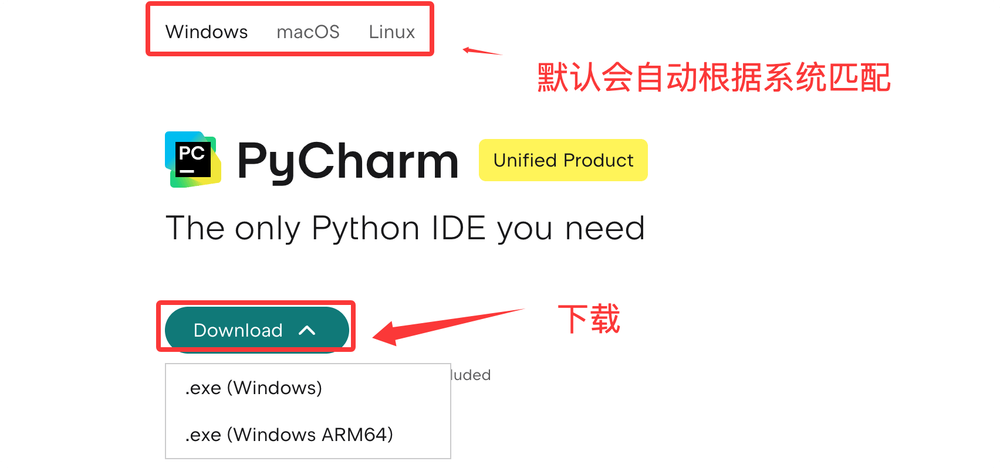
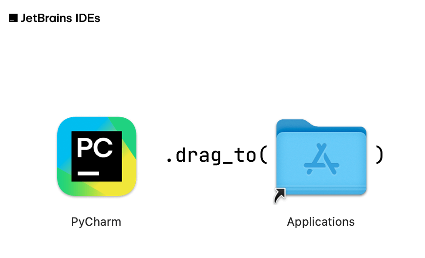
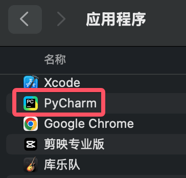
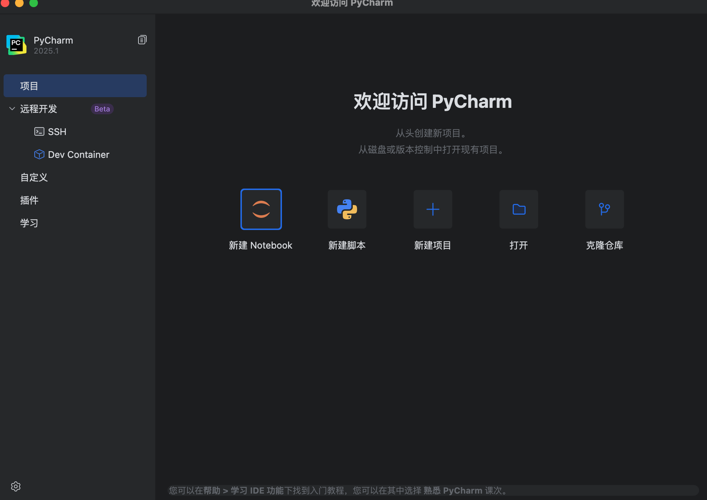
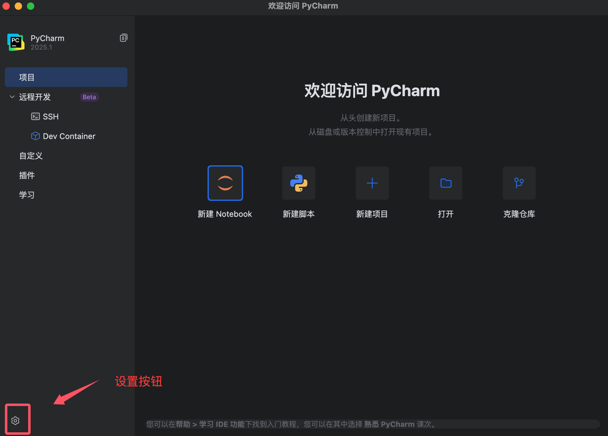
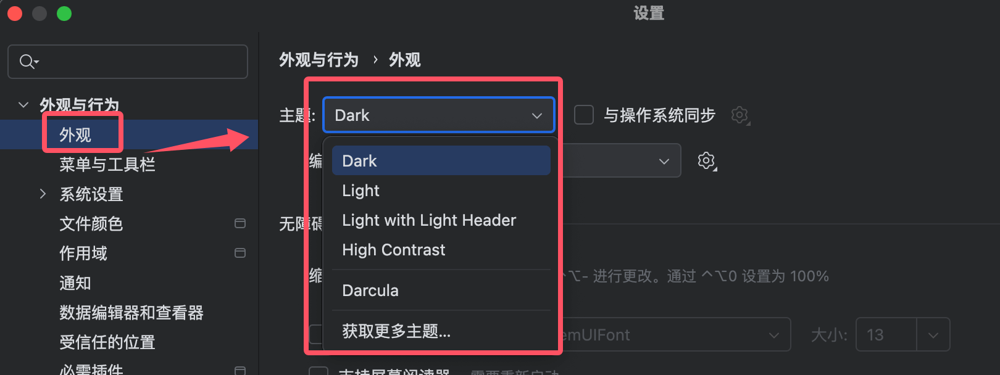
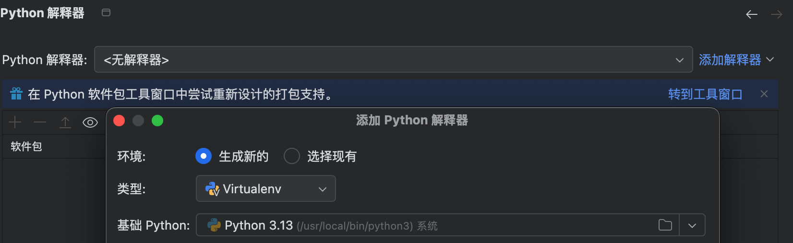
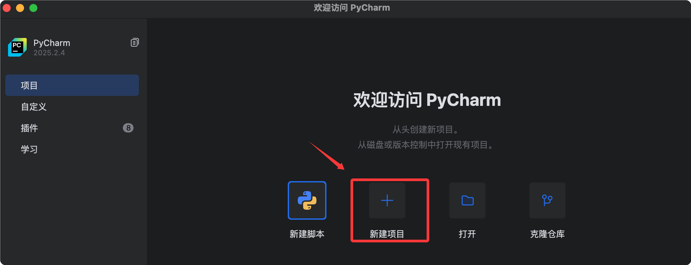
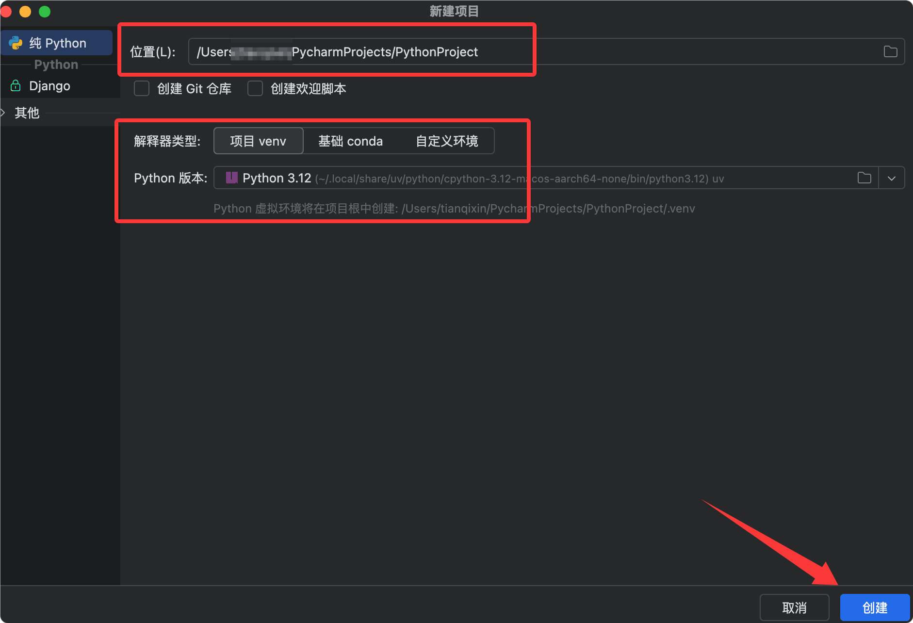
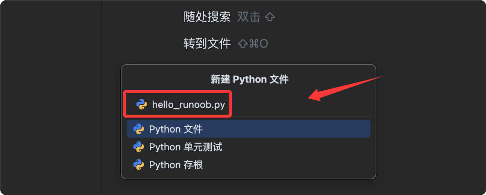

Python PyCharm のインストールと使用
PyCharm は JetBrains が提供する Python 統合開発環境（IDE）であり、スマートなコード補完とグラフィカルなデバッグ機能を備え、Windows / macOS / Linux の全プラットフォームをサポートしています。
PyCharm は、コード作成、プログラム実行、デバッグ、プロジェクト管理、コラボレーションを一体化したツールであり、現在業界で最も主流な Python 開発ツールです。
この章では、Python と PyCharm のインストールを紹介し、最初の Python プログラムを作成して実行します。
| 段階 | 内容 |
|---|---|
| 1. Python のインストール | Python インタープリターのダウンロード、インストール、確認 |
| 2. PyCharm のインストール | PyCharm Community 版のダウンロードとインストール |
| 3. プロジェクトの作成 | 新規プロジェクトを作成し、Python ファイルを作成 |
| 4. コードの作成と実行 | hello.py を作成して実行 |
Python のインストール
Python は Python プログラムの実行に必要なインタープリターであり、PyCharm はコードを実行するためにこれに依存しています。
Python のインストールは 3 つのステップに分かれます: インストールパッケージのダウンロード、インストールの実行、インストール結果の確認です。
Python のダウンロード
ブラウザを開き、Python 公式サイトのダウンロードページにアクセスします：https://www.python.org/downloads/。
ウェブサイトは通常、お使いのオペレーティングシステム（Windows / macOS / Linux）を自動的に検出し、ページ上の黄色いボタンをクリックすると最新版をダウンロードできます。

Python 3.10 以降を選択することをお勧めします。現在、主流のチュートリアルやサードパーティ製ライブラリは新しいバージョンへの対応が良好です。Python 2.x は 2020 年にサポートが終了したため、もう使用しないでください。
Python のインストール
以下では Windows システムを例に説明します。macOS および Linux ユーザーは対応する説明を参照してください。
Windows のインストール手順：
| 手順 | 操作 | 説明 |
|---|---|---|
| 1 | インストールパッケージをダブルクリック | ダウンロードした .exe ファイルを実行します。例：python-3.12.x-amd64.exe |
| 2 | PATH オプションにチェックを入れる | 重要な手順：インストール画面下部でチェックを入れますAdd python.exe to PATH、そうしないとコマンドラインで Python が見つからない可能性があります
|
| 3 | 「Install Now」をクリック | インストールの進行バーが完了するのを待つだけです |

macOS ユーザー：
.pkg インストールパッケージをダブルクリックして案内に従ってインストールを完了するか、Homebrew パッケージマネージャーでインストールすることもできます：
brew install python3
インストールの確認
コマンドラインツールを開き（Windows ではコマンドプロンプトまたは PowerShell、macOS ではターミナル）、次のコマンドを入力します：
python --version
次のような表示が出ればPython 3.12.0のバージョン番号が表示されれば、インストール成功です。
一部のシステム（特に macOS/Linux）では、システム標準の python コマンドが Python 2 を指しているため、この場合は次のように入力して
python3 --version新しくインストールした Python 3 を確認します。
PyCharm のインストール
PyCharm は JetBrains 社によって開発されており、現在最も人気のある Python IDE の 1 つです。
エディションは 2 つあり、初心者は無料の Community 版を選べば十分です：
| エディション | 費用 | 対象ユーザー | 主な機能 |
|---|---|---|---|
| Professional（プロフェッショナル版） | 有料 | プロフェッショナル開発者 | Web 開発、データベースツール、科学計算などの全機能をサポート |
| Community（コミュニティ版） | 無料 | 初心者 / 学生 | 純粋な Python 開発のコア機能で、初心者には十分です |
PyCharm のダウンロード
JetBrains 公式サイトの PyCharm ダウンロードページにアクセスします：https://www.jetbrains.com/pycharm/download/。
ページ内でDownloadボタンを見つけ、対応するOSのダウンロードボタンをクリックします。

PyCharm のインストール
オペレーティングシステムごとのインストール方法は次のとおりです：
| オペレーティングシステム | インストール方法 |
|---|---|
| Windows | .exe インストールパッケージをダブルクリックし、そのまま「次へ」をクリックします。「デスクトップショートカットを作成」にチェックを入れることをお勧めします。 |
| macOS | .dmg ファイルをダブルクリックし、PyCharm アイコンを Applications フォルダーにドラッグします |
| Linux | .tar.gz を解凍して実行できますbin/pycharm.sh、または Snap でインストールできます |
Linux Snap のインストールコマンド：
sudo snap install pycharm-community --classic
インストール完了後に PyCharm を開くと、初回起動時に UI テーマとキーボードショートカットの設定を選択するよう案内されます。デフォルト設定のままでも、好みに応じて選択しても構いません。
PyCharm のインストール
Windows システム
- ダウンロードしたインストールファイルをダブルクリックします（
.exe）。 - インストールウィザードでインストール先のパスを選択します。デフォルトのパスを使用することをお勧めします。
- チェックを入れるデスクトップショートカットを作成（Creat Desktop Shortcut）これにより PyCharm をすばやく起動できます。
- クリックインストール（Install）インストールを開始します。
- インストールが完了したら、完了（Finish）インストールウィザードを終了します。

macOS システム
- ダウンロードした
.dmgファイルを開きます。 - PyCharm アイコンを "Applications" フォルダーにドラッグします。

- "Applications" フォルダーで PyCharm を見つけ、ダブルクリックして起動します。

Linux システム
- ダウンロードした
.tar.gzファイルを解凍します。tar -xzf pycharm-*.tar.gz
- 解凍したディレクトリに入り、
binフォルダーを見つけます。cd pycharm-*/bin
- を実行して
pycharm.shPyCharm を起動します。./pycharm.sh
PyCharm の設定
PyCharm を初めて起動すると、初期設定を行うように求められます。言語を設定し、契約に同意できます：


起動後は、個人の好みに応じた設定ができます：

テーマの選択： "Darcula"（ダーク）または "Light"（ライト）テーマを選択できます。

Python インタープリターの設定：Python がインストール済みの場合、PyCharm が自動的にインタープリターを検出して設定します。インストールされていない場合は、手動で追加できます。

プラグインのインストール：PyCharm が一般的なプラグインをいくつか推奨します。必要に応じて選択してインストールできます。

最初のプロジェクトを作成
PyCharm はプロジェクト（Project）を単位としてコードを管理します。1 つのプロジェクトは 1 つのフォルダーに対応し、その中に複数の Python ファイルを含めることができます。
新規プロジェクト
PyCharm を開いたら、ようこそ画面のNew Project（新規プロジェクト）ボタンをクリックします。

表示された作成ウィンドウで、2 つの設定を確認する必要があります：
| 設定項目 | 説明 | 例 |
|---|---|---|
| Location（プロジェクトの場所） | プロジェクトフォルダーの保存パス | D:\PythonProjects\HelloWorld |
| Python Interpreter（インタープリター） | Python インタープリターのパス。PyCharm は通常自動的に検出します | 自動的に認識されない場合は、手動で選択しますpython.exe 或 python3 |

内容を確認したら、右下隅のCreate（作成）ボタンをクリックします。
プロジェクトパスに中国語やスペースを含めないでください。含めると一部のサードパーティ製ツールが正常に動作しない可能性があります。すべて英語のパスを使用することをお勧めします。
新しい Python ファイル
プロジェクトの作成が完了したら、PyCharm のメイン画面で以下の手順に従って Python ファイルを作成します。
| 手順 | 操作 |
|---|---|
| 1 | 左側の Project（プロジェクト）パネルで、プロジェクトのルートディレクトリを右クリックします |
| 2 | 選択しますNew → Python File |
| 3 | ファイル名を入力します（例：hello_サンプル）、Enter キーで確定します |


PyCharm が自動的にhello_サンプル.pyファイルを生成し、右側の編集エリアで開いてコードを記述できるようにします。
最初のプログラムを書いて実行
ファイルを作成したら、コードを書いて実行し、Python プログラムの実行結果を確認しましょう。
コードを書く
にhello_サンプル.pyファイルに以下のコードを入力します：
例
# 最初の Python プログラム：ユーザーに挨拶して対話する
# print() 関数は画面上に文字を出力するために使います
print("Hello, World!")
# input() 関数はユーザーがキーボードから入力するのを待ち、戻り値は文字列です
# 括弧内の文字はユーザーに表示するプロンプト情報です
name = input("あなたの名前を入力してください：")
# f-string（フォーマット文字列）を使うと、文字列内に直接変数を埋め込めます
# 中括弧 {} 内の変数は、その変数の値に置き換えられます
print(f"こんにちは、{name}！Python 学習へようこそ。")

このコードは3つのことを行います：
| コード | 役割 |
|---|---|
print("Hello, サンプル!") |
固定の挨拶文を画面に表示する |
input("请输入你的名字：") |
画面にプロンプトを表示し、ユーザーが名前を入力して Enter キーで確定するのを待ち、入力内容を変数に格納しますname |
print(f"你好，{name}！...") |
f-string を使用して変数nameの値を挨拶文に埋め込み、個別化された出力を生成します |
プログラムを実行
PyCharm には複数の実行方法があります。どれか1つを選んでください：
| 実行方法 | 操作 |
|---|---|
| 右クリックメニュー | 編集エリアの任意の場所で右クリックし、Run 'hello' |
| 実行ボタンを選択します | コード編集エリア右上の緑色の三角形ボタンをクリックします |
| ショートカットキー | Windows/Linux ではShift + F10、macOS ではCtrl + R |

実行すると、PyCharm の下部にRun（実行）ウィンドウが表示され、プログラムの出力が表示されます：
Hello, サンプル! 请输入你的名字：サンプル 你好，サンプル！欢迎学习 Python。 进程已结束，退出代码为 0
実行ウィンドウの入力エリアに名前を入力して Enter キーを押すと、個別化された挨拶文が表示されます。
実行時に次のようなメッセージが表示された場合"No Python interpreter configured"、PyCharm が Python インタープリターを見つけていないことを意味します。次に
File → Settings → Project → Python InterpreterPython のインストールパスを手動で指定すれば解決できます。
よくある問題のトラブルシューティング
Python と PyCharm を初めて使うとき、最もよく遭遇する4つの問題とその解決策は以下のとおりです。
| 問題の現象 | 考えられる原因 | 解決方法 |
|---|---|---|
コマンドラインで入力python「内部コマンドまたは外部コマンドとして認識されていません」と表示される |
インストール時に Add to PATH にチェックを入れなかった | インストーラーを再実行してこのオプションにチェックを入れるか、Python のパスをシステム環境変数に手動で追加します |
| PyCharm がインタープリターを見つけられないと表示する | PyCharm が Python を自動的に検出しなかった | にFile → Settings → Project → Python Interpreter（設定画面）で Python 実行可能ファイルのパスを手動で指定します。 |
| コードを実行しても反応がない、またはエラーになる | コードのインデントエラー、またはファイルが保存されていない | コードのインデントが一貫しているか確認してください（Python はインデントを厳密に要求します）。ファイルが保存されていることを確認してください（未保存の場合はファイル名の横にドットマークがあります）。 |
| 中国語の出力が文字化けする | ファイルのエンコーディングが UTF-8 ではない | にFile → Settings → Editor → File Encodings（設定画面）でエンコーディングを UTF-8 に設定します。 |